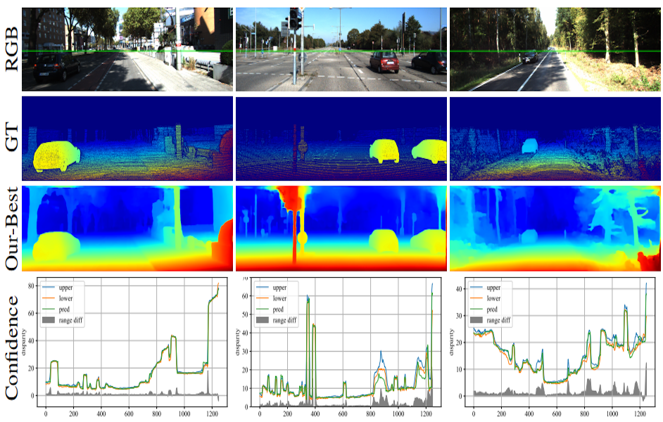

Shivam Duggal
Email /
Google Scholor /
Github /
Twitter
|
|
I am working as a Research Scientist at Uber ATG, Toronto, where I am advised by Professor Raquel Urtasun. I obtained my Bachelor's degree in Computer Science from Delhi Technological Unviersity, India (DTU, formerly DCE) in August 2017.
My research interests lie at the intersection of computer vision, computer graphics and robotics. Currently, I am interested in developing algorithms/ systems which can enable efficient 3D scene understanding through 3D perception, 3D reconstruction, novel-view synthesis etc.
|
Highlights
|
Aug. 2019: |
Promoted to Research Scientist: Uber ATG Toronto. |
|
Jul. 2019: |
Our paper DeepPruner got accepted at ICCV 2019. |
|
Nov. 2018: |
Our paper on Online Video Summizarion got accepted at WACV 2019. |
|
Aug. 2018: |
Joined Uber ATG Toronto as AI Resident. |
|
Aug. 2017: |
Graduated from DTU, joining Amazon India as SDE. |
|
Dec. 2016: |
ACM ICPC India Finalist: National Rank 28. |
|
Publications
|
|
Secrets of 3D Implicit Object Shape Reconstruction in the Wild
Shivam Duggal, Zihao Wang*, Wei-Chiu Ma, Sivabalan Manivasagam, Justin Liang, Shenlong Wang, Raquel Urtasun
In Submission (CVPR 2021)
|
|
|
|
GeoSim: Photorealistic Image Simulation with Geometry-Aware Composition for Self-Driving
Yun Chen*, Frieda Rong*, Shivam Duggal*, Shenlong Wang, Xinchen Yan, Sivabalan Manivasagam, Shangjie Xue, Ersin Yumer, Raquel Urtasun.
In Submission (CVPR 2021)
|
|
|

|
DeepPruner: Learning Efficient Stereo Matching via Differentiable PatchMatch
Shivam Duggal, Shenlong Wang, Wei-Chiu Ma, Rui Hu, Raquel Urtasun
ICCV 2019 (Seoul, Korea)
Paper /
Code /
Webpage
Real-time stereo estimation via Differentiable PatchMatch !
(62ms on KITTI)
|
|

|
Online Video Summarization: Predicting Future to Better Summarize Present
Shamit Lal, Shivam Duggal*, Indu Sreedevi
WACV 2019 (Hawaii, USA)
Paper
|
|
|
Miscelleneous
| I enjoy playing all kind of sports, particularly: cricket, badminton and soccer. Some old memories, here !! |
|
|
{kind=link}